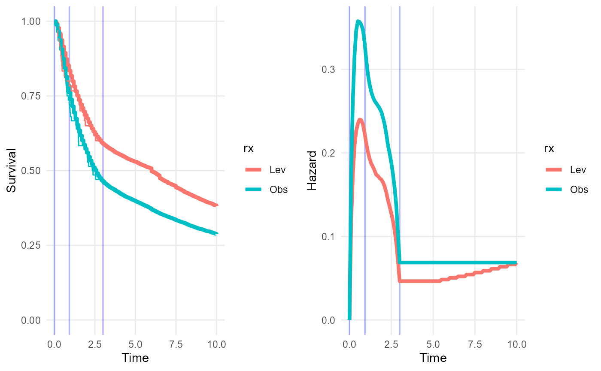

Treatment effect waning in survextrap
Christopher Jackson chris.jackson@mrc-bsu.cam.ac.uk
2023-03-30
Source:vignettes/waning.Rmd
waning.RmdTreatment effect waning: principles
Suppose we have short-term data, say from a trial of a treatment against a control. The trial data is assumed to be representative of the treatment effect in the short term. We may also have long-term data that gives information about the survival in the control group. However we do not believe that the effect of the treatment will continue. In the long term, we suppose the treatment effect “wanes” or diminishes, so that over time the treatment and control group will have similar risks.
How is this done in survextrap? Essentially:
We fit a
survextrap(M-spline) model that combines the short-term data with the long-term data on the control group. From this model, we estimate the short-term treatment effect (e.g. with a proportional hazards model), and the long-term survival in the control group.However, we do not want to use the model directly to estimate long-term survival in the treatment group, because it relies on the assumption that the hazard ratio in the short term continues in the longer term. Instead, to predict long-term survival in the treatment group we assume that the treatment effect wanes over some time interval from \(t_{min}\) to \(t_{max}\), where \(t_{min}\) is after the follow-up period of the trial.
Waning model
Specifically, to predict the long-term hazard \(h(t | x=1)\) in the treated group, we assume:
Between time \(t=0\) and \(t=t_{min}\), \(h(t | x=1)\) is equal to the hazard in the treated group \(x=1\), estimated from the model.
After time \(t=t_{max}\), \(h(t | x=1)\) is equal to the hazard in the control group \(h(t | x=0)\), estimated from the model.
-
During the interval between \(t = t_{min}\) and \(t = t_{max}\), the log hazard ratio \(\log(hr(t)) = \log(h(t|x=1) | h(t|x=0))\) diminishes linearly between the log hazard ratio \(\log(hr(t_{min}))\) at \(t_{min}\), estimated from the model, and zero at \(t_{max}\). That is, \(\log(hr(t)) = w \log(hr(t_{min}))\), where \(w = (t - t_{min}) / (t_{max} - t_{min})\).
Hence the predicted hazard for the treated group at \(t\) is defined from the M-spline model as \(h(t|x=1) = h(t | x=0) hr(t)\), where \(h(t|x=0)\) comes from the fitted M-spline model.
A piecewise-constant approximation, on a fine grid, is then imposed on the hazard within the waning period to allow easy calculation of the cumulative hazard, survival and related quantities.
Note that the waning assumption is implemented during prediction from the fitted model, rather than as a “prior” or structural assumption used during model fitting. The baseline log hazard ratio at \(t_{min}\) is inferred from the M-spline model, short-term data and any long-term data provided. Then when requesting predictions of, e.g., survival curves, hazard curves or mean survival times from this fitted model, we can optionally request that over some interval \(t_{min},t_{max}\) the log hazard ratio for some covariate changes linearly between the value estimated from the model and some “null” value.
The fitted M-spline model does not necessarily need to be a proportional hazards model to use treatment waning. If the fitted model is non-proportional hazards, the hazard ratio will be non-constant between time 0 and \(t_{min}\), then wane between the value at \(t_{min}\) and zero at \(t_{max}\).
Example
For clarity here, we subset the example data to only two out of the three treatment groups: observation-only and levamisole.
First we fit a survextrap model (arbitrarily, for this example, an M-spline model with 5 basis terms).
We extrapolate the survival and hazard curves up to 10 years under a naive assumption of proportional hazards beyond the end of follow-up (3 years).
library(dplyr)
library(survextrap)
colons2 <- colons %>% filter(rx %in% c("Obs", "Lev")) %>% droplevels()
rxph_mod <- survextrap(Surv(years, status) ~ rx, data=colons2,
fit_method="opt", mspline=list(df=5))
plot(rxph_mod, tmax=10, niter=100)
To predict from this model under a waning treatment effect we must define the following:
wane_period: a vector containing the start and end of the period over which the effect wanesnewdata: the covariate values that define the hazard under the “full” effect (before waning starts)newdata0: the covariate values that define the hazard under the “null” effect (after waning finishes)
Optionally we can also supply wane_nt, which defines the
number of intervals to use for the grid approximation to the hazard
within the waning period. This defaults to 10, which I’d expect to be
sufficient in practice.
These things are supplied as arguments to the functions
survival, hazard and rmst, and
the plot and mean methods for survextrap
objects.
In this example, we predict the survival and hazard over 10 years for the treated and control groups. The treated group is assumed to experience treatment effect waning - so that between 5 and 10 years, their log hazard changes linearly between the modelled hazard of the treated group and the modelled hazard of the control group.
To obtain predictions for both groups, we first define the “full” and “null” covariate values, as data frames with two rows, one for the treated group and one for the control group. Note for the control group, the “full” and “null” covariate values are the same.
nd_full <- data.frame(rx = c("Lev","Obs"))
nd_null <- data.frame(rx = c("Obs","Obs"))We then supply these as arguments to the plot method,
along with a definition of the waning period (5 to 10 years), to
illustrate the survival and hazard trajectories for each group under
this waning model. Note how the hazard curves converge over the waning
period. The survival curves have only just started to converge - the
effects of the waning on survival would be more noticeable over longer
extrapolation periods (say 30-40 years).

We also compare the restricted mean survival times (up to 50 years) with and without treatment waning. The consequence of the waning treatment effect is to reduce this long term mean survival time under the treated group by about three years. (Combining waning with computation of the restricted mean is computationally intensive, so in this illustration, we only use a sample of 20 from the posterior distribution).
## rx variable t median 2.5% 97.5%
## 1 Lev rmst 50 14.7 3.5 33
## 2 Obs rmst 50 9.4 3.1 24## rx variable t median 2.5% 97.5%
## 1 Lev rmst 50 12.4 3.3 31
## 2 Obs rmst 50 9.3 2.7 24Distribution utilities
Distribution and random number generation functions for the “waning
effect” model are available as psurvmspline_wane(),
Hsurvmspline_wane(), hsurvmspline_wane(),
dsurvmspline_wane(), qsurvmspline_wane(),
rsurvmspline_wane(), to enable users to construct other
summaries or predictions from this model.